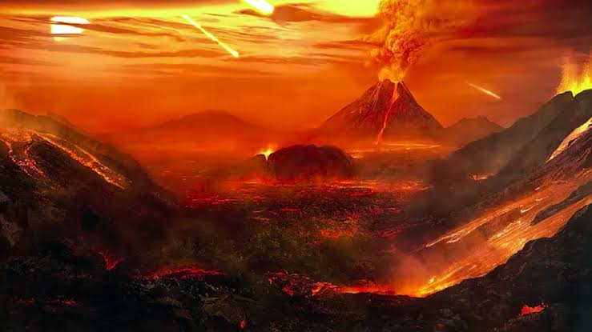
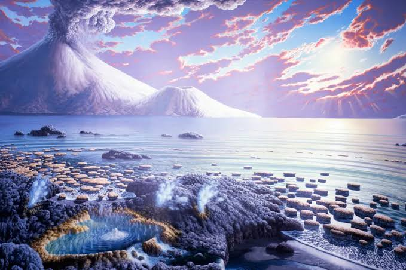
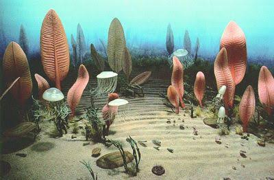
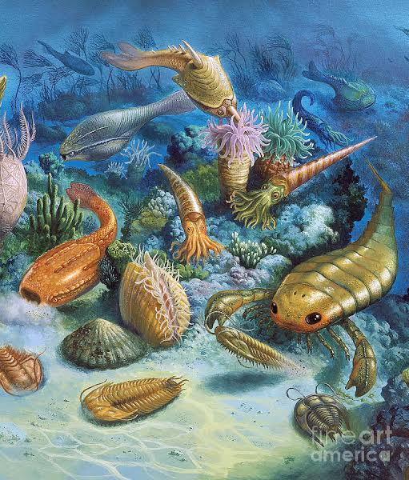
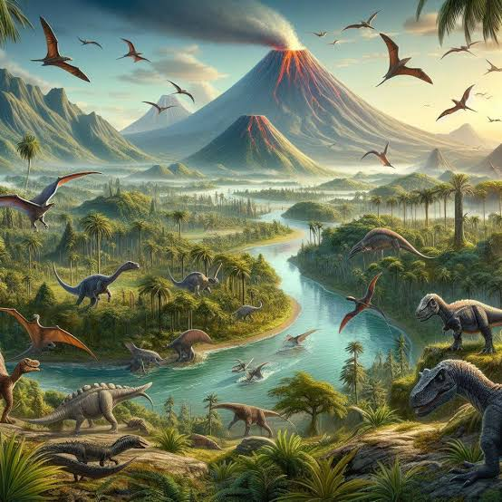
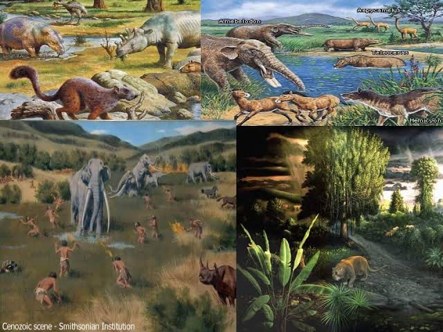

EARTH AND LIFE SCIENCE
GEOLOGIC TIME SCALE
EON
- Is what represents the largest division of the geologic time scale; eons are what span millions to billions of years.
- Makes nearly 90% of geologic time.
-Made up of Eras.
- Precambrian Time has older subdivisions, these are the Hadean, Archean, and Proterozoic Eons.
- The Phanerozoic Eon is what is known as the current eon.
  
HADEAN ARCHEAN PROTEROZOIC
ERA
- -A period of time, usually in history, that is different from other periods because of particular characteristics or events.
- Made up of Periods.
- Composed of three eras, Paleozoic, Mesozoic, Cenozoic.
  
PALEOZOIC MESOZOIC CENOZOIC
PERIODS
Period
- Periods are characterized by geological and biological changes. It represents a specific length of time within which events and developments occur, such as shifts in climate, geology, and life forms.
- Is a subdivision of an era.
- Divided into epochs
MAJOR EVENTS
Eon ,Cretaceous-Paleogene
- A major event during the Phanerozoic Eon is the Cretaceous-Paleogene extinction event, which occurred around 66 million years ago. This event led to the mass
extinction of about 75% of Earth's species, including the dinosaurs, and is widely believed to have been caused by a combination of volcanic activity and an asteroid impact.
Era ,The Cambrian Explosion
- A major event during the Paleozoic Era is the Cambrian Explosion, which began around
541 million years ago, during which there was a rapid widespread appearance of different life forms in the fossil record.
Period ,Jurrasic
- The major event during the Jurassic period is the period where dinosaurs started
emerging or populating. Often noted for the dominance of big dinosaurs on land.
PAGE 2